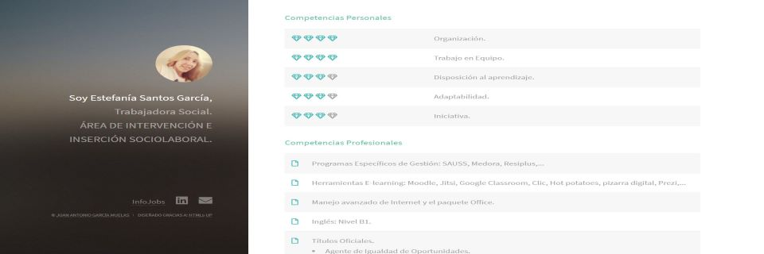

Digital Resume
Estefanía Santos

Professional profile website.
Resume Online.
Estefanía is a professional with extensive experience in her profession who wanted to give a new twist to her nothing traditional Resume, modern, updated and very different from what most of us are used to Let's see with a simple Word document that cascades the experience.
Based on it, it seeks to focus on the one hand their professional role in a side banner, with access to their social networks and a quick presentation with the main areas and a contact zone.

On the other hand, the value areas of your Resume are presented in different quick access views with easy-to-read content thanks to the proposed design..
You can see the result from this link.
Do you think like Estefania and want to give your CVitae a spin? Remember my contact.